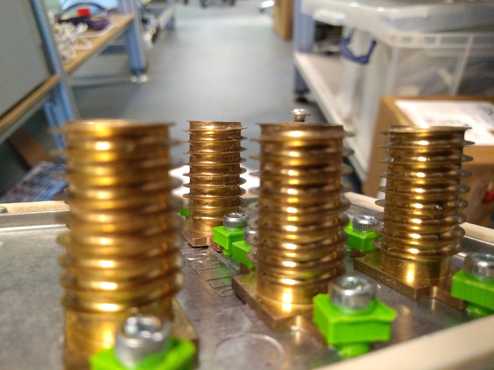

The University of Warwick
School of Engineering
Dr Nikolay Cherkasov
August 2019
Summer Research Project
Through designing and manufacturing a continuous flow reaction calorimeter a study of the enthalpies of mixing different liquid pairs was carried out. The device uses isothermal power compensated spatially resolved reaction calorimetry in a continuous flow with the aim of gaining accurate results efficiently and at a low cost. Through manual calculations and computer aided design thermal simulations a heat exchanger was produced for the mixing tube to be coiled around. A Peltier thermoelectric element cools the reactor coiled around the heat exchanger. Calorimeters are typically very expensive products ranging in the thousands of pounds and therefore by using cheaper parts and innovative design ideas it was still possible to measure milliwatt changes in thermal power from chemical reactions. Implementing Arduino proportional-integral-differential control to obtain spatially resolved data for six consecutive reactor units, accurate results were gained more efficiently. The units are calibrated using resistive heaters (Joule effect) to determine the cooling power of the Peltier units under a range of conditions. Then from performing a series of model chemical reactions with known reaction heat and utilising pumps to alter the flow rate for the individual solutions the approach was validated. The results gained show how the flow rate effects the heat from the chemical reaction and how the accuracy of the calorimeter varies. Though further experimentation real-life applications for the calorimeter were demonstrated and results verifying the high sensitivity and accuracy of the low-cost setup were obtained.
To read the research poster click here. 